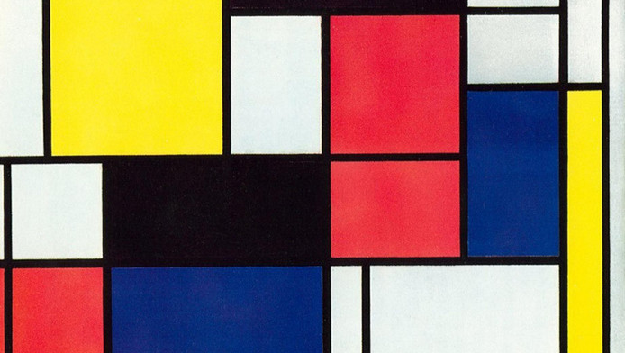
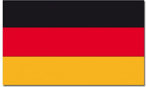

Mondriaan , dit is een project waar je veel met flexboxen moet doen. Flexboxen is het veranderne van de locatie in de afbeelding.
Vlaggen
Vlaggen we kregen een opdracht om verschillende soorten vlaggen te maken. daarbij moesten wij de vlakken op de juiste plaats progammeren.
Boterkaas en eiren
Boter kaas en eiren is het klassiekie spel met 9 vakken. Hierbij is er gebruik gemaakt van Javascript.